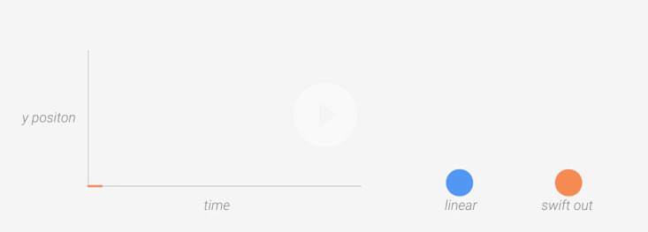

应该：
灵活的加速、温和的减速，这样的动效让用户感到自然且愉悦。
不应该：
线性的运动让人感到机械生硬。观察运动曲线，我们可以看到在运动开始和结尾处，运动速率突然的改变，这让人感到非常的突兀、不真实。
当物体进场时，确保物体进场时处于最大速率。这样的运动便显得非常自然：因为物体在进场前便开始了运动，而不是进场时才开始运动。同样的，当物体退场时，要确保物体处于最大速率，而不是减速。在进场时缓入，在退场时缓出，这样用户的注意力会集中在动效上。然而，大多数情况下，这不是设计者想要的结果。
应该：
进场和退场时的速率为最大速率，能够营造出自信感十足的动效。
不应该：
在进场时加速，退场时减速。这样用户就会因速率的变化而分心。
动效的迅捷反馈，可以让用户充满信任感和愉悦感。当用户与应用交互时，所反馈的动效不但极具美感，符合物理逻辑，而且能够愉悦用户。反馈动效的设计必须深思熟虑且具有目的性，而不能随性设计，反馈动效应温和 ，不让用户分心。